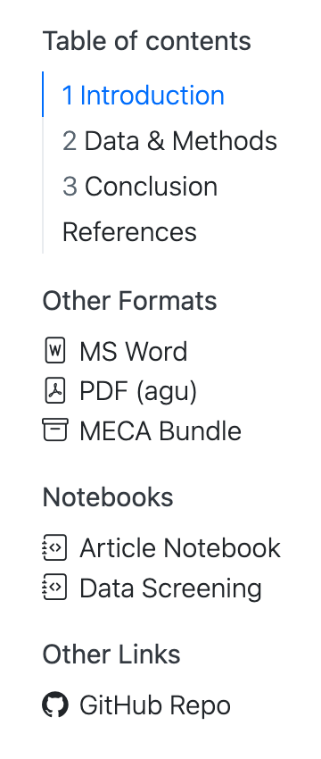
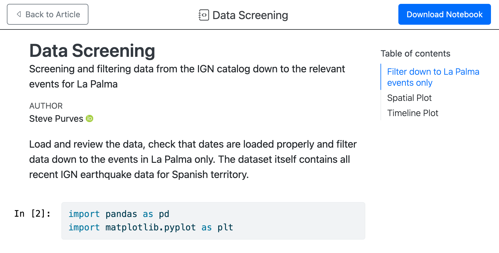

Quarto Manuscripts
This feature is new in Quarto 1.4. Download the latest version of Quarto at https://quarto.org/docs/download/.
Overview
Quarto manuscript projects provide a framework for writing and publishing scholarly articles. A Quarto manuscript lets you:
Use one or more notebooks or
.qmddocuments as the source of content and computations, and then publish these computations alongside the manuscript, allowing readers to dive into your code.Produce manuscripts in multiple formats (including LaTeX or MS Word formats required by journals), and give readers easy access to all of the formats through a manuscript website.
The output of a Quarto manuscript is a website (live example). The article itself appears as the content of the website, and can include all the elements common to scholarly writing like figures, tables, equations, cross references and citations. The website also makes available other formats (e.g. PDF, Docx) as well as links to all of the computations used to create the article.


On the right, you’ll see navigation: a table of contents for the article itself followed by links to Other Formats, Notebooks and Other Links.
Other Formats
These links allow a reader to download alternative formats of your article. In this example, there is an MS Word version that may be useful for a reviewer to provide feedback and a PDF version that uses the American Geophysical Union’s (AGU) template. Additionally, there is a MECA archive, a zip file that is designed to capture your article and its supporting documents into a single file suitable for sending to a publisher.
Notebooks
These are links to notebooks included in the manuscript. The “Article Notebook” is the notebook version of the article itself. In this example, “Data Screening” is a notebook from which a single cell is embedded in the article. Any other notebooks that are included in the project, even if they are not directly used in the article will also appear here.
When a reader visits any of these notebook links, they are served an HTML version of the notebook, allowing them to view the code and output without leaving their browser. In addition, a link to download the source code of the notebook is also provided.

Other Links
Links that leave the manuscript webpage, for example to take a reader to the manuscript’s GitHub Repo.
Get Started
Install Quarto
Manuscripts are a feature in the 1.4 release of Quarto. Before you get started, make sure you install the latest release version of Quarto.
Highlights
Quarto 1.4 includes the following new features:
Quarto Manuscripts—A new project type for scholarly articles, where notebooks are both the source of the article, and part of the published record.
Quarto Dashboards–A new format for creating interactive dashboards.
Typst Format—Support for the
typstoutput format. Typst is a new open-source markup-based typesetting system that is designed to be as powerful as LaTeX while being much easier to learn and use.Cross-reference changes:
Adds a new Cross-Reference Div Syntax to more flexibly define cross-referenceable elements.
Allows the definition of Custom Cross-Reference Types via document or project YAML.
Adds
lst-labelandlst-capcode cell options to create Cross-referenceable Listings for Executable Code.Allows Cross-Referencing Callouts.
Adds the prefixes
rem-andsol-to cross-reference Remarks and Solutions in addition to the existing theorem types.Makes other behind the scenes changes.
Shiny for Python—Support for using Shiny for Python within Quarto documents.
Inline Execution for Jupyter—Support for executing inline expressions when using Jupyter kernels.
-
Jupyter—Support for rendering script files (e.g.
.py,.jl, or.r) that are specially formatted as notebooks.Knitr—Support for rendering R script files (e.g.
.ror.R) that are formatted for report usingknitr::spin()syntax.
Easy Binder Configuration for Quarto Projects—Support for generating files required to deploy a Quarto project using Binder.
Connect Email Generation—Extends the
htmloutput format so that HTML/text emails can be created and selectively delivered through Posit Connect.Publish to Posit Cloud—Adds
posit-cloudas a venue forquarto publish.Lightbox Treatment for Images and Figures—Support for zooming into images and figures using a
lightbox. Includes support for grouping multiple images into a gallery.Lua changes—Quarto v1.4 adds new features to writers of Lua filters.
AST processing changes—Quarto v1.4 improves on the HTML table processing added in v1.3 and adds a way for LaTeX raw blocks to include Quarto-compatible markdown for processing.
Release Notes
You can find release notes and installers for all platforms at https://quarto.org/docs/download/prerelease.html
Choose Your Tool
You can author Quarto manuscripts in any tool or notebook editor. The tutorials below walk you through authoring Quarto manuscripts with a few common tools.
Choose your tool to start learning: